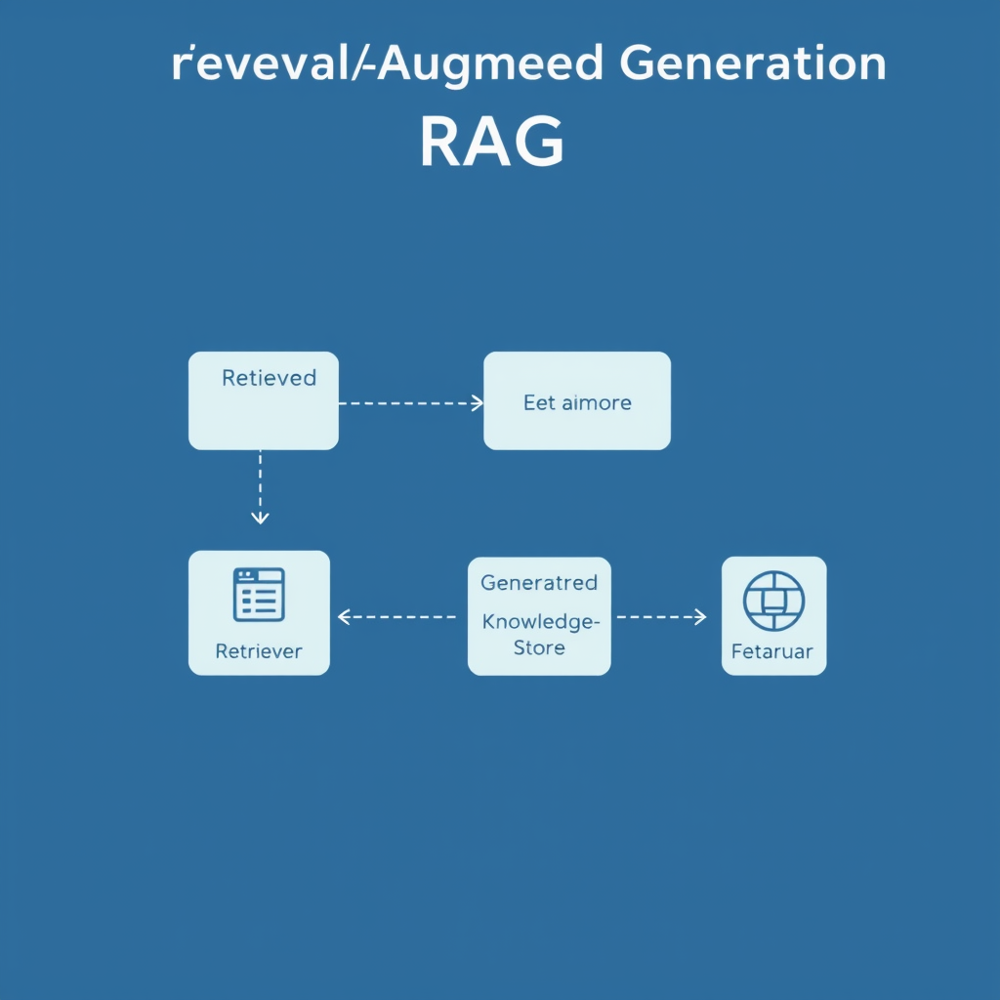
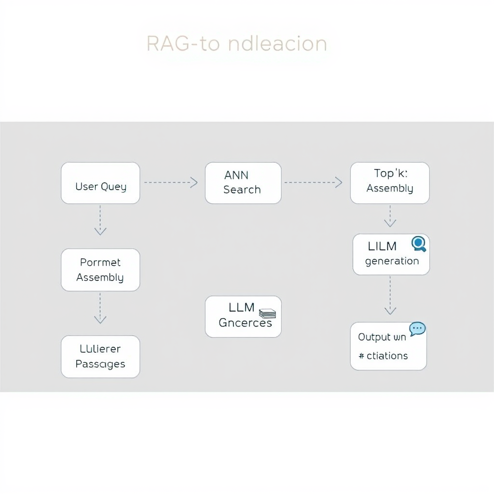
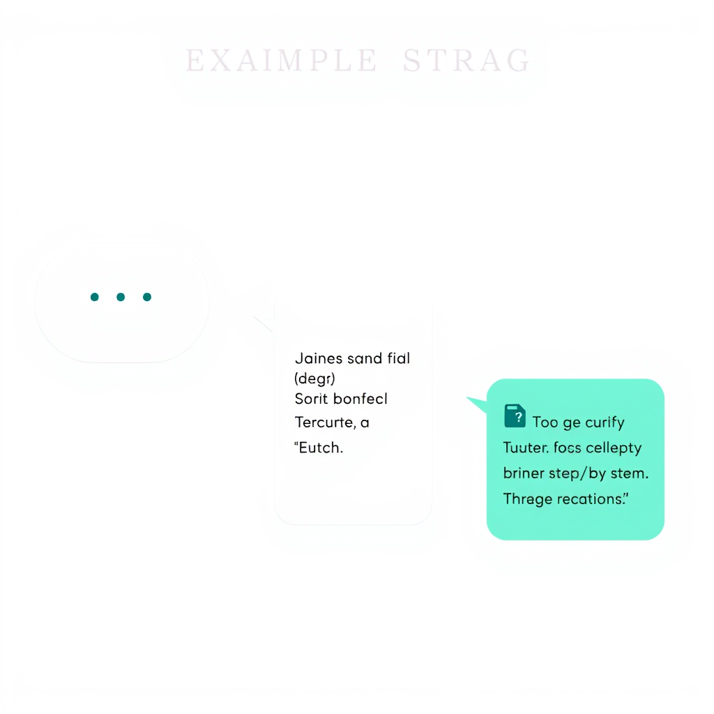

Introduction to RAG
Retrieval‑Augmented Generation (RAG) combines two traditionally separate AI capabilities—information retrieval and natural language generation—into a single, end‑to‑end system. Instead of relying solely on the parameters of a language model to produce answers, a RAG pipeline first fetches relevant external documents (or passages) and then conditions the generation step on that retrieved context. The result is a model that can answer questions, write summaries, or draft content with up‑to‑date, factual grounding while still benefiting from the fluency of large language models (LLMs).
Core Components of RAG
A typical RAG architecture consists of three tightly coupled modules:
| Component | Role | Common Implementations |
|---|---|---|
| Retriever | Searches a knowledge store for pieces of text that are likely to contain the answer. | Dense vector retrievers (e.g., FAISS, ScaNN) using embeddings from BERT, DPR, or sentence‑transformers; sparse retrievers (BM25). |
| Reader/Generator | Consumes the retrieved passages and produces the final output. | Decoder‑only LLMs (GPT‑3, LLaMA, Falcon) or encoder‑decoder models (T5, BART). |
| Knowledge Store | The corpus of documents the retriever draws from. | Static datasets (Wikipedia, domain‑specific manuals) or dynamic stores (company intranet, web‑crawled data). |
The synergy among these modules is what gives RAG its “augmented” capability: the generator is no longer a closed‑book model but a “open‑book” one that can look up evidence on demand.
Retrieval Mechanism
The retrieval stage transforms a user query into a vector representation (or a set of lexical terms) and then performs similarity search against the indexed knowledge store.
- Embedding Generation – A dual‑encoder (often called a bi‑encoder) encodes the query and each document independently. Because the encodings are pre‑computed for the corpus, lookup is fast.
- Indexing – Vectors are stored in an approximate nearest‑neighbor (ANN) index (FAISS, HNSW, ScaNN). The index balances speed and recall, allowing real‑time retrieval even from millions of passages.
- Scoring & Reranking – The top‑k candidates (commonly 5–20) are optionally reranked with a cross‑encoder that jointly attends to query and passage, improving relevance at the cost of latency.
- Passage Selection – The final set of passages is concatenated (often with delimiters) and passed to the generator. Strategies such as “max‑pooling” or “semantic chunking” help keep the total token count within model limits.
Generation Process
Once the relevant text is in hand, the generator produces the answer:
- Prompt Construction – The retrieved passages are embedded in a prompt that typically includes an instruction (e.g., “Answer the question using only the information below”) and the original query.
- Conditioned Decoding – The LLM attends to both the instruction and the retrieved context. Because the context is external, the model can remain relatively small while still delivering accurate, up‑to‑date information.
- Post‑Processing – Techniques such as answer extraction, citation tagging, or confidence scoring are applied to make the output more usable for downstream applications.
End‑to‑End Workflow
- User Query → 2. Query Encoder → 3. ANN Search → 4. Top‑k Passages → 5. Prompt Assembly → 6. LLM Generation → 7. Output (with optional citations)
A practical illustration: a customer support chatbot receives the question “How do I reset my two‑factor authentication?”. The query encoder maps the question to a vector, the retriever pulls the relevant sections from the company’s security policy wiki, the prompt is built, and a modest‑sized LLM generates a step‑by‑step guide, citing the exact policy paragraph.
Use Cases and Applications
| Domain | Example Application | Why RAG Fits |
|---|---|---|
| Enterprise Knowledge Management | Internal help‑desks that answer policy or HR questions. | Guarantees answers are grounded in the latest internal documents. |
| Healthcare | Clinical decision support that references up‑to‑date guidelines. | Reduces hallucination risk by anchoring to authoritative sources. |
| Legal | Contract analysis tools that retrieve precedent clauses. | Enables precise citation of statutes or prior cases. |
| Education | Adaptive tutoring that pulls textbook excerpts. | Provides factual scaffolding while maintaining conversational flow. |
| Search & Summarization | Generative search engines that return concise answers with source links. | Combines relevance ranking with natural‑language summarization. |
Benefits and Limitations
Benefits - Improved factuality – Retrieval provides a factual anchor, decreasing hallucinations. - Data efficiency – The generator can be smaller because it does not need to memorize all knowledge. - Dynamic knowledge – Updating the knowledge store (e.g., adding a new policy) instantly refreshes the system without retraining the LLM. - Explainability – Retrieved passages can be shown as citations, increasing user trust.
Limitations - Latency – Retrieval and possible reranking add overhead compared to a pure generation model. - Index maintenance – Large, frequently changing corpora require incremental indexing or re‑embedding pipelines. - Context window constraints – The generator can only attend to a limited number of tokens; careful passage selection or chunking is required. - Retrieval quality dependency – If the retriever fails to fetch relevant documents, the generator may still hallucinate or produce low‑quality answers.
Future Directions
Research is converging on tighter integration between retrieval and generation:
- Joint Training – End‑to‑end differentiable retrieval (e.g., RAG‑Fusion) where the retriever and generator are co‑optimized.
- Hybrid Retrieval – Combining dense and sparse signals in a single index to capture both semantic similarity and exact keyword matches.
- Multimodal RAG – Extending retrieval to images, tables, or code snippets, allowing generators to reason over heterogeneous data.
- Efficient Retrieval – Leveraging quantization, product quantization, or learned indexes to reduce memory footprint and latency.
- Self‑Correcting Loops – Using the generator’s confidence to trigger additional retrieval passes (iterative refinement).
These trends aim to make RAG systems faster, more accurate, and capable of handling richer modalities.
Conclusion
Retrieval‑Augmented Generation bridges the gap between static knowledge storage and generative flexibility. By coupling a high‑performance retriever with a language model, RAG delivers answers that are both fluent and factually grounded, making it a compelling choice for any domain where up‑to‑date, explainable information is critical. Understanding the architecture—retriever, knowledge store, and generator—along with the practical workflow, enables data scientists and AI practitioners to design, evaluate, and deploy RAG solutions that meet real‑world demands while being mindful of latency, indexing, and context limitations. As research pushes toward tighter integration and multimodal capabilities, RAG is poised to become a foundational building block of next‑generation AI assistants and enterprise knowledge systems.


